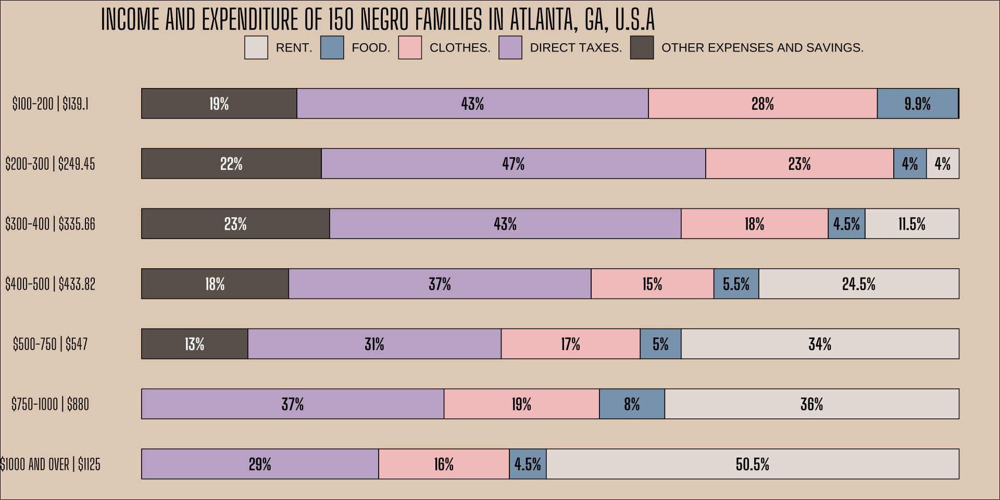

Working title: DuBois Challenge
[ADD DISCLAIMER ABOUT ANTIQUATED LANGUAGE USED]
Introduction
In February 2021, Allen Hillery, Athony Starks, and Sekou Tyler, started the #DuboisChallenge, and annual online challenge where participants use modern data visualization tools such as R, Python, and Tableau, among others, to recreate the data visualizations by W.E.B. Du Bois in the 1900 Exposition Universelle (also known as the 1900 Paris Exposition). The seven-week challenge included 10 out of the 63 visualizations in the original exhibit. Each week, participants were tasked with recreating one of the visualizations and there were three “bonus” visualization challenges. People used social media to share their recreations side-by-side with the originals using the tag #DuBoisChallenge, and many shared the code they used for the recreation. The challenge took place again in February 2022 and it was featured in 2021 and 2022 as part of RStudio’s weekly online data visualization event, TidyTuesday.
Many instructors in statistics and data science courses present the historical work of Florence Nightingale, a pioneer of data visualization, as early examples of visually presenting data in a compelling way. Less often presented, however, is the work of W.E.B. Du Bois, a sociologist, author, and activist, who used data visualizations to share the lived experience of African Americans in the late 19th and early 20th centuries. Though not a statistician by training, the influence of his work can still be seen in the visualizations produced by the statistics and data science communities today. As the statistics community (and STEM more broadly) strives to increase representation by people in historically marginalized groups, there is an opportunity to share and celebrate the historical work of pioneers like W.E.B. Du Bois in the classroom.
In this column we present examples of activities for the classroom that are inspired by the #DuBoisChallenge. We begin with a brief history of the 1900 Paris exhibit. Then we present two activities for introductory-level students based on the visualization “Proportion of Total Negro Children of School Age Who Are Enrolled in the Public Schools.” We walk through these activities in detail, sharing discussion questions as students interpret the graph along with guidance to lead students through recreating the visualization. Next we present examples of two more recreation activities that can be used as a follow-up to the first or for students in more advanced-level data visualization courses. All of the activities are presented using ggplot2 in R; however, the came concepts could be applied to recreate the visualizations using other software.
The data for the visualization and R code to recreate the visualizations presented in this column are available in the GitHub repository at bit.ly/taking-a-chance .
A Brief History
The book W.E.B. Du Bois’s Data Portraits: Visualizing Black America edited by Whitney Battle-Baptiste and Britt Rusert, gives a history of Du Bois’s exhibit at the Exposition Universelle (also known as the 1900 Paris Exposition) along with prints and details of the 63 visualization presented at the event. We provide a brief summary of the historical background in the book that instructors can share with students as background and context for the collection of visualizations. We encourage the readers to see this book and other sources in the Further Reading section for a more detailed history of Du Bois and the 1900 Paris Exposition.
Du Bois’s visualizations were part of the Exposition des Nègres d’Amérique (The Exhibit of American Negroes), an exhibit organized by newspaper editor Thomas Junius Calloway. The goal of the exhibit was to tell the story of African Americans after Emancipation using a variety of items including texts, portraits, and data visualizations. The exhibit highlighted the progress made by African Americans, and Du Bois in particulr, used data and visualizations to counter the “narrative of Black inferiority.”
As a professor at Atlanta University, a historically Black university in Georgia, Du Bois was one of the first professors in the United States to train students in empirical sociological involving data collection and analysis. Therefore, he worked with his current and former students to create the visualizations for the 1900 exhibit. They used data collected by Du Bois’s sociology lab, government reports, and data from the United States Census. The data were used to create two sets of visualizations: one focusing specifically on the experience of African Americans in Georgia and one focusing on more national-level statistics and trends. The visualizations were hand drawn using ink, watercolor, and graphite. They stood out from other visualizations of the time with their bright colors and modern style, an intentional design choice by Du Bois to make more effectively convey the message to the Parisian audience.
Du Bois’s visualizations and photographs from the 1900 Paris Exhibit are available in the Library of Congress digital collection.
Activity 1
Activity 2
Extension
- By this point students are learned about creating and interpreting visualizations in ggplot2 along with some data wrangling. This activity could come towards the beginning of the term after these topics have been taught (may require more guidance to help students) or at the end of the term when students are very familiar with using R.

Recreation
Conclusion
Further reading
Du Bois TidyTuesday
2022: https://github.com/rfordatascience/tidytuesday/blob/master/data/2022/2022-02-15/readme.md
2021 (tweets from the challenge): https://github.com/rfordatascience/tidytuesday/blob/master/data/2021/2021-06-15/readme.md
Du Bois data portraits repo: https://github.com/ajstarks/dubois-data-portraits/tree/master/challenge/2022
Anthony Starks presentation on recreating the images: https://speakerdeck.com/ajstarks/recreating-the-dubois-data-portraits?
W.E.B. Du Bois Data Visualization book